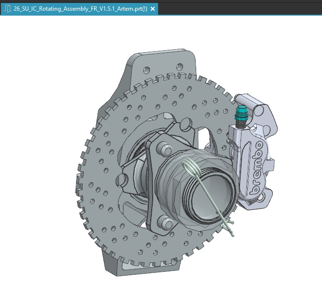
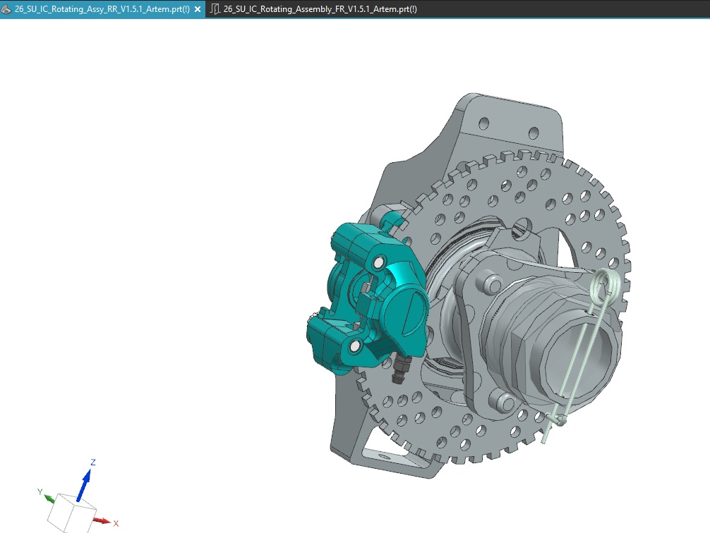
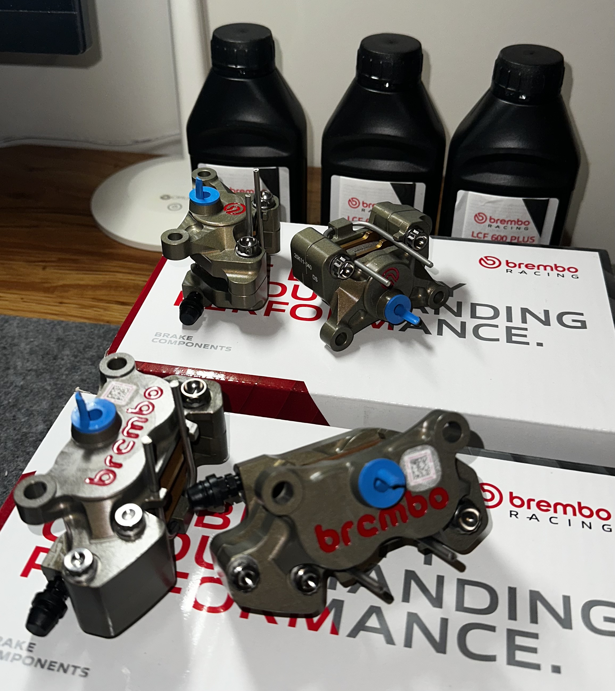
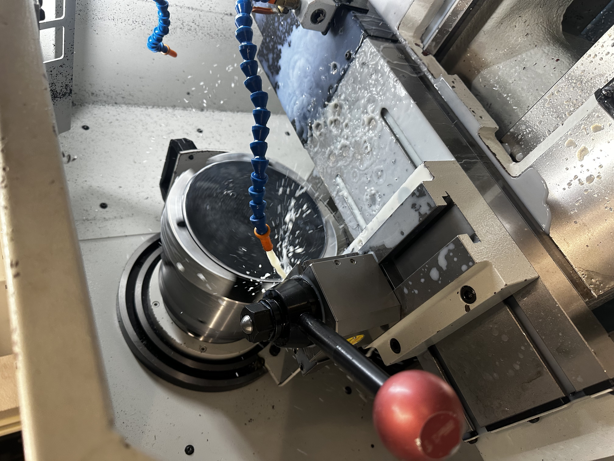
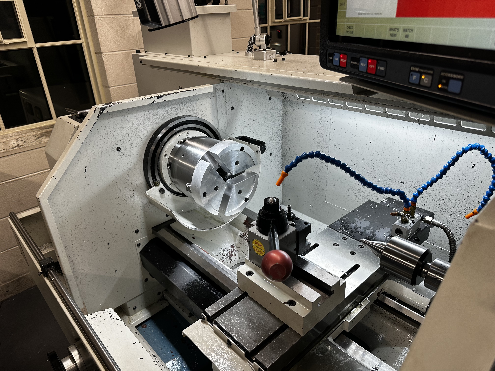
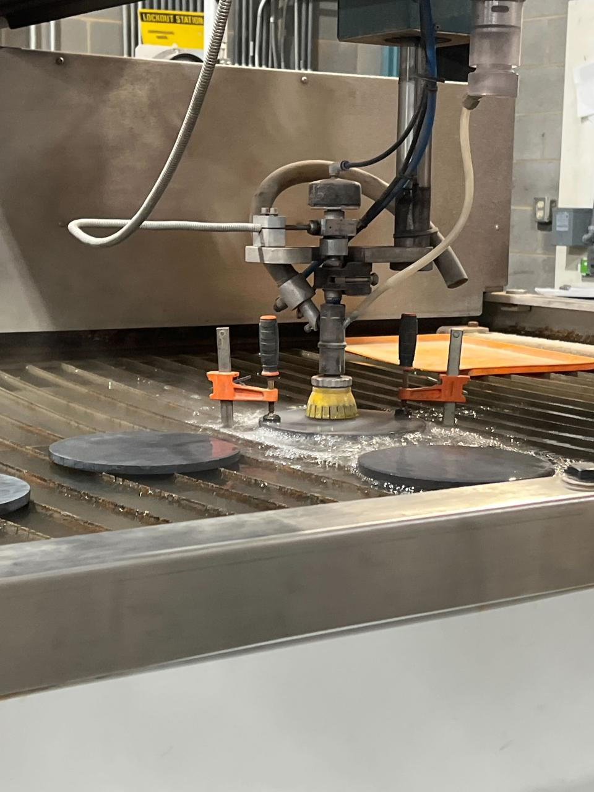
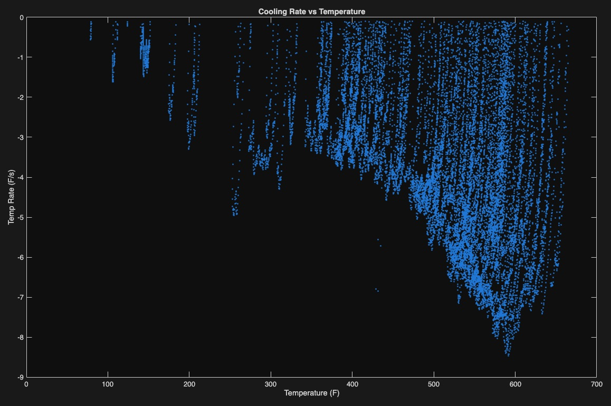
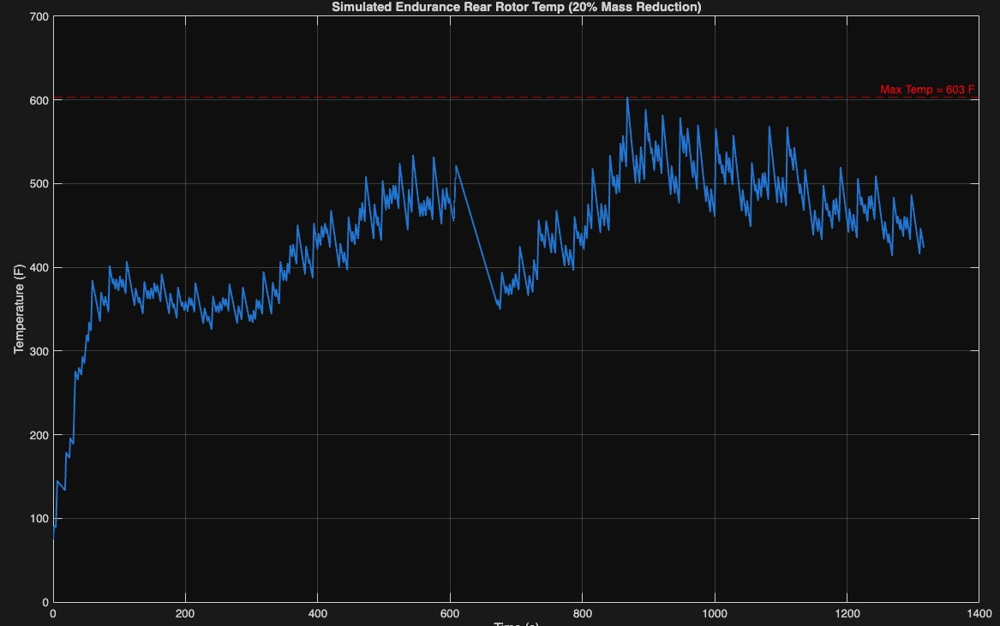
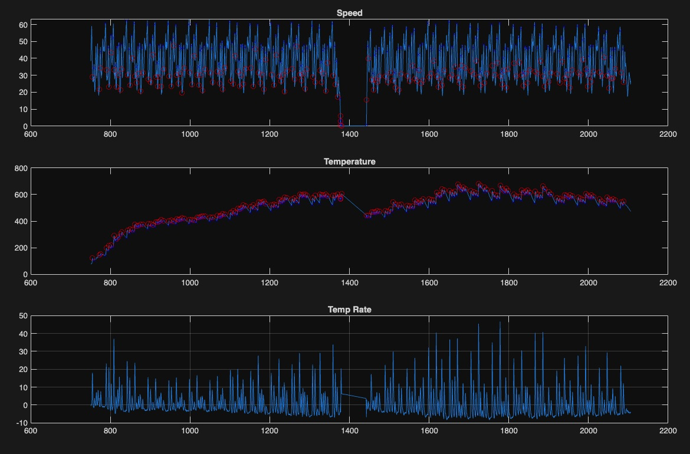
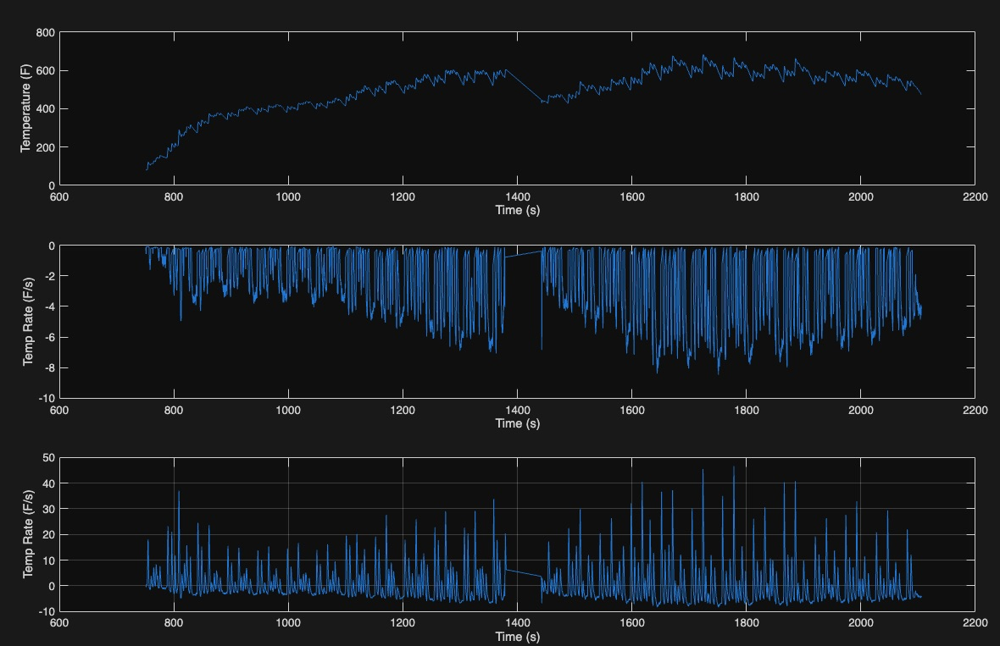

May 2025 - Present
2026 Internal Combustion & Electric Vehicle Brake Systems
Responsible for the design, validation, and manufacturing of the 2026 internal combustion and electric vehicle brake systems.











